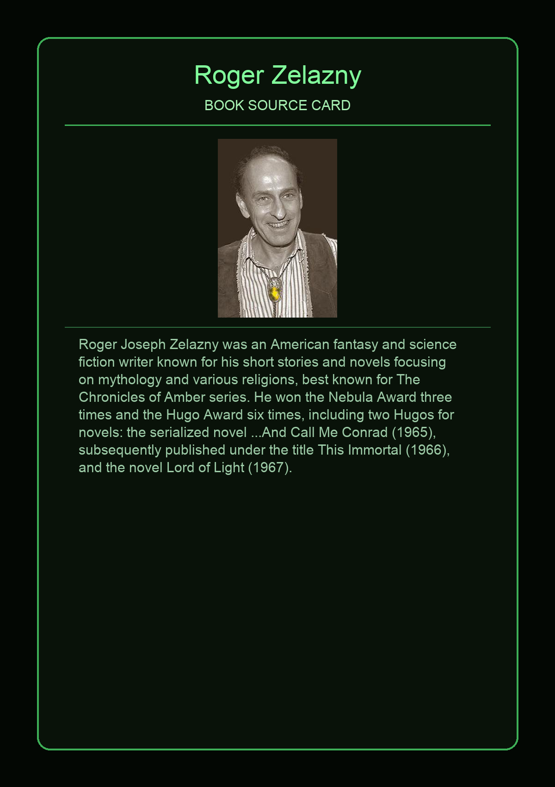
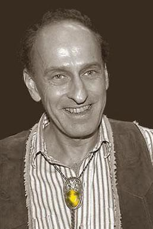

Roger Joseph Zelazny was an American fantasy and science fiction writer known for his short stories and novels focusing on mythology and various religions, best known for The Chronicles of Amber series. He won the Nebula Award three times and the Hugo Award six times, including two Hugos for novels: the serialized novel ...And Call Me Conrad (1965), subsequently published under the title This Immortal (1966), and the novel Lord of Light (1967).
This page aggregates references to the source material behind Name Lore entries.